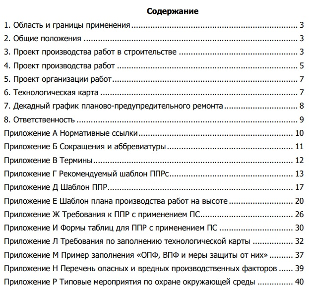

С чего начать разработку ППР

Наконец-то мы приближаемся к сути нашего курса – разработке ППР. На этом уроке рассмотрим исходные данные для качественного оформления ППР.
С чего начать разработку ППР
Для качественного ППР недостаточно просто желания – нужны вводные данные. В ваш обязательный пакет документов должны входить:
- нормативные документы:
СП 48.13330.2019 «Организация строительства»,
МДС 12‑46.2008 «Методические рекомендации по созданию и оформлению проекта организации строительства, проекта организации работ по сносу (демонтажу), проекта производства работ»,
МДС 12‑81.2007 «Методические рекомендации по изготовлению и оформлению проекта организации строительства и проекта производства работ»,
СП 127.13330.2016 «Безопасность труда в строительстве»; - проектная документация, проект организации строительства, техническое задание с требованиями к строительству;
- инженерные изыскания: топографические планы, состав и свойства грунтов, уровень грунтовых вод, загрязнения, климатические особенности;
- организационно‑технологические данные: графики, сроки, ресурсы, техника и поставщики.
У крупных заказчиков есть свои методички по оформлению ППР. Чтобы сдать работу быстрее, запросите у заказчика или коллег по стройплощадке пример уже утвержденного проекта, это избавит вас от лишних правок. Пример такого документа смотрите ниже.

Упражнение №1. Попробуйте самостоятельно определить, какие из предложенных документов станут вашей основой при разработке ППР.
Как мы уже говорили, состав ППР зависит от требований заказчика. Если специальных указаний нет, используйте структуру из СП 48.13330.2019.
Когда ППР разрабатывается в полном и сокращенном объеме
Полный состав ППР используется при строительстве:
- на территории города;
- на действующем предприятии;
- в сложных природных и геологических условиях;
- уникальных, опасных и технически сложных объектов.
Во всех остальных случаях допускается использовать упрощенный состав ППР. Смотрите ниже в памятке состав ППР для обоих случаев. Памятку можно скачать и распечатать, чтобы она всегда была у вас под рукой.
Упражнение №2. Выберите документы, которые входят в состав ППР в сокращенном объеме.